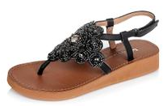

如果夏天一定要选一双百搭款的鞋子的话，我们一定会推荐给你平底凉鞋，因为它真的是太经典年年都不过时，不管怎么搭配都很好看，重要的是它是最实用的款，比起高跟凉鞋，平底凉鞋更加舒服随意，完全让你拒绝不了！如果夏天一定要选一双百搭款的鞋子的话，我们一定会推荐给你平底凉鞋，因为它真的是太经典年年都不过时，不管怎么搭配都很好看，重要的是它是最实用的款，比起高跟凉鞋，平底凉鞋更加舒服随意，完全让你拒绝不了！
平底凉鞋的搭配就比较简单啦，其实它真的非常百搭，所以才在夏天特别受欢迎，下面就是平底凉鞋和衣服的几种搭配方案，绝对的实用贴，而且非常容易学会，从颜色和款式上花些心思，你绝对是街抢眼的那一个。
短裙LOOK搭配平底凉鞋也是明星和时尚博主们经常选择的一种搭配方案，短裙如果是印花波点之类元素的，就选择一双款式简单的平底凉鞋，如果是纯色的短裙，就选择一双有设计感的平底凉鞋，比如凉鞋上加些铆钉或者绑带元素，都会很好看。短裙LOOK搭配平底凉鞋也是明星和时尚博主们经常选择的一种搭配方案，短裙如果是印花波点之类元素的，就选择一双款式简单的平底凉鞋，如果是纯色的短裙，就选择一双有设计感的平底凉短裙LOOK搭配平底凉鞋也是明星和时尚博主们经常选择的一种搭配方案，短裙如果是印花波点之类元素的，就选择一双款式简单的平底凉鞋，如果是纯色的短裙，就选择一双有设计感的平底凉